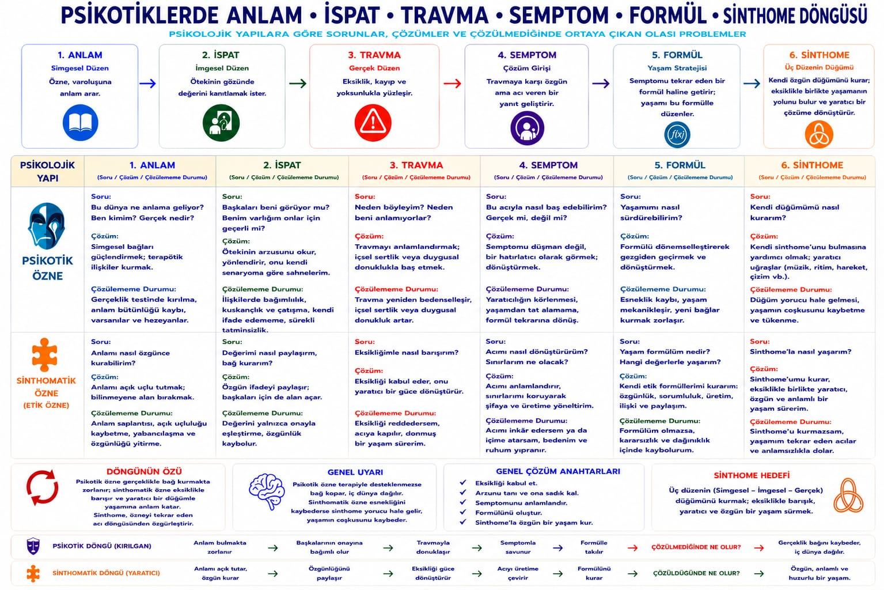
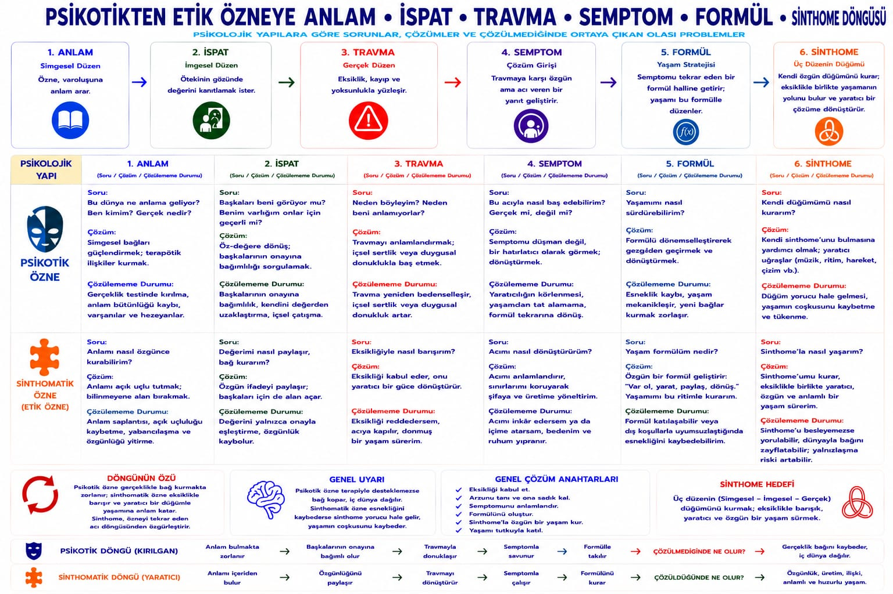

Forklüzyon · ev yapımı Simgesel
Psikotik özne
Daha fazla nevroz değil: başka bir düğüm. Nevrozun bastırdığını psikoz istila olarak karşılayabilir.
Özel bir düzen (hezeyan, sistem) Gerçek'i sabitleme çabasıdır. Geç Lacan Joyce'un yazısını sinthome olarak okur. Yalnızca özel düzeni yıkmak yerine bir düğüm — müzik, zanaat, ritim — bulunmasına yardım.

